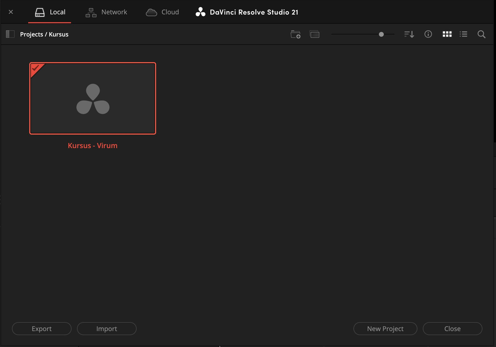
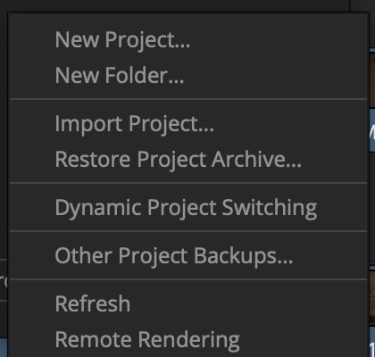
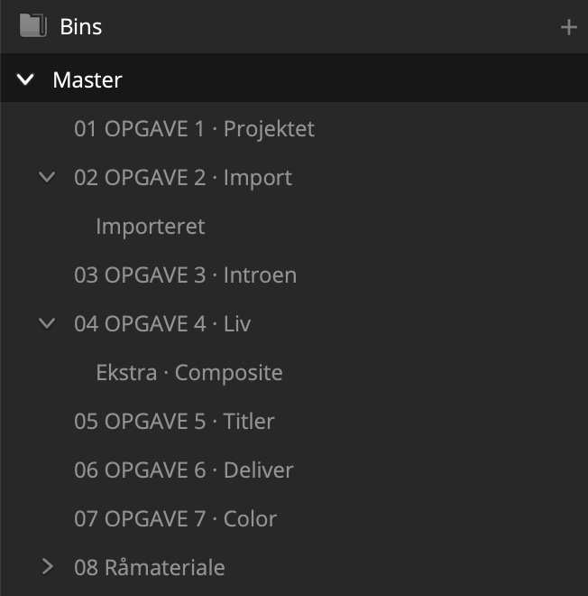
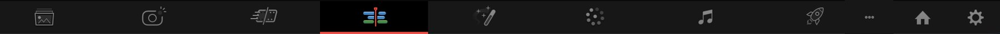
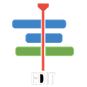
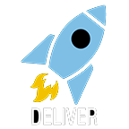
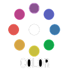
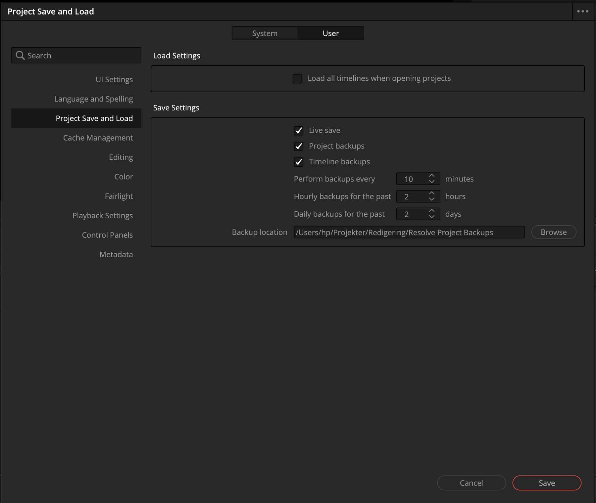

Første del · Vis 3 → Gør 5
Gendan projektet
Vis · 3 min
Kig med. Hænderne væk fra musen.
-
Åbn Resolve
Programmet åbner i Project Manager: vinduet med alle dine projekter. Det er her, projekterne bor, og det er her, du altid kan komme tilbage til.

-
Højreklik i det tomme felt, og vælg Restore Project Archive

-
Vælg kursuspakken
Find mappen, du pakkede ud, og vælg filen, der ender på
.dra. Klik Open. -
Dobbeltklik på kursusprojektet
Det dukker op i Project Manager, når det er gendannet.
Gør · 5 min Åbn, når jeg siger nu Nu er det dig
Start i Project Manager, med kursuspakken pakket ud
Gendan kursuspakken, og åbn projektet.
Sådan
- Højreklik i det tomme felt → Restore Project Archive. Se trinet
- Vælg filen, der ender på
.dra, og klik Open. Se trinet - Dobbeltklik på projektet, når det dukker op. Se trinet
Projektet kommer ikke frem
Så har du valgt mappen uden om .dra-filen. Gå ét niveau ned i
mappen, og prøv igen.
Projektet er væk fra skærmen
Klik på husikonet nederst til højre. Det fører tilbage til Project Manager, og dit projekt ligger der stadig. Det er den hyppigste panik hos nye brugere: troen på, at noget er væk.
Checkpoint
Edit-siden står fremme, og i Media Pool til venstre kan du se mapperne 01 til 08. Åbn 01 OPGAVE 1, dobbeltklik på timelinen Hele filmen · eksporteret, og spil filmen. Det er starten af den, du skal genskabe i dag.

Anden del · Vis 4
Dagens fire sider
Vis · 4 min
Kig med. Hænderne væk fra musen.
Nederst i programmet står en række knapper. Hver af dem skifter reelt til et andet program inde i Resolve, og rækkefølgen følger den vej, en film bliver til. I dag bruger vi fire af dem.

Media
Hvor optagelserne kommer ind. Man kan gøre det samme fra Edit, og det gør vi i dag.

Edit
Klippebordet. Her sætter vi klippene sammen, og her er vi det meste af dagen.

Deliver
Udgangen. Her bliver filmen til en fil, andre kan se.

Color
Lys og farve. Den side, programmet er berømt for. Vi slutter dagen her.
Cut, Fusion og Fairlight bruger vi ikke i dag. Du finder gode videoer om dem under Ressourcer.
Tredje del · Vis 2 → Gør 3
Mist aldrig dit arbejde
Vis · 2 min
Kig med. Hænderne væk fra musen.
Resolve gemmer løbende af sig selv, men kun hvis det er slået til.
-
Åbn Preferences
Ctrl + , på Windows, Cmd + , på Mac.
-
Vælg User, og derefter Project Save and Load
User er fanen øverst. Preferences har to faner, og halvdelen af alle leder i den forkerte.
-
Sæt tre flueben, og klik Save
Live save gemmer løbende. Project backups og Timeline backups gemmer versioner tilbage i tiden. Det er dem, der redder dig, når noget går galt.

Fanen User, tre flueben.
Billedhastighed: det skal du vide
Et projekt har en billedhastighed. Importerer du det første klip i et tomt projekt, og passer klippets billedhastighed ikke med projektets, spørger Resolve, om projektet skal skifte. Sig ja. Når der først ligger noget på en timeline, er billedhastigheden låst.
I dag er den sat i pakken, så du skal ikke røre den. Men det er her, dine elever falder i: bed dem om at optage med samme billedhastighed på telefonen hver gang.
Gør · 3 min Åbn, når jeg siger nu Nu er det dig
Checkpoint
Der står tre flueben, og du har klikket Save.